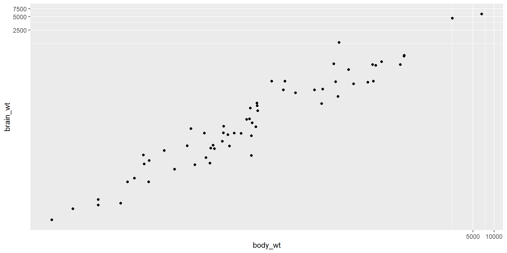
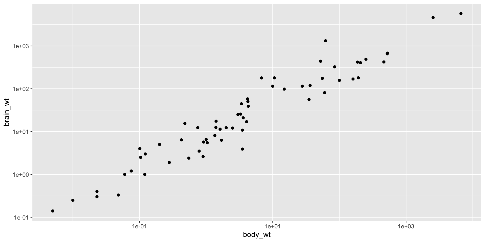

Associations Code Presentation
Installing and Loading Packages
GGally
GGally extends ggplot2 by adding several functions to reduce the complexity of combining geoms with transformed data. Some of these functions include a pairwise plot matrix, a scatterplot plot matrix, a parallel coordinates plot, a survival plot, and several functions to plot networks.OpenIntro Package
The OpenIntro package includes the data and functions for the OpenIntro Statistics textbook. The package also contains custom plotting functions for reproducing book figures, and the datasets used in OpenIntro labs.Report
Primary goal of report is to bridge the gap between R’s output and the formatted results contained in your manuscript. It automatically produces reports of models and data frames according to best practices guidelines (e.g., APA’s style), ensuring standardization and quality in results reporting.report package works in a two step fashion. First, you create a report object with the report() function. Then, this report object can be displayed either textually (the default output) or as a table, using as.data.frame(). Moreover, you can also access a more digest and compact version of the report using summary() on the report object.
Tidyverse Package
The tidyverse is a collection of R packages designed for data science. All packages share an underlying design philosophy, grammar, and data structures. Most importantly, the tidyverse collection of packages contains ggplot.Scatterplots
We can then import the data into a new object called blue_jays# A tibble: 5 × 8
bird_id sex bill_depth_mm bill_width_mm bill_length_mm head_length_mm
<chr> <chr> <dbl> <dbl> <dbl> <dbl>
1 0000-00000 M 8.26 9.21 25.9 56.6
2 1142-05901 M 8.54 8.76 25.0 56.4
3 1142-05905 M 8.39 8.78 26.1 57.3
4 1142-05907 F 7.78 9.3 23.5 53.8
5 1142-05909 M 8.71 9.84 25.5 57.3
# ℹ 2 more variables: body_mass_g <dbl>, skull_size_mm <dbl>Creating Scatterplots
Creating scatterplots is simple and they are very useful when you want to reveal the nature of the relationship between two variables. Now, let us look at the blue jay data as a scatterplot. Figure 4 is a plot of head length against body mass. In this plot, head length is shown along the y-axis and body mass along the x axis, and each bird is represented by one dot (Figure 4). Note the terminology: we say that we plot the variable shown along the y-axis against the variable shown along the x-axis.Transformations
The relationship between two variables may not be linear. In these cases we can sometimes see strange and even inscrutable patterns in a scatterplot of the data. Sometimes there really is no meaningful relationship between the two variables. Other times, a careful transformation of one or both of the variables can reveal a clear relationship.coord_trans() function, is different to scale transformations in that it occurs after statistical transformation and will affect the visual appearance of geoms - there is no guarantee that straight lines will continue to be straight.
Figure 7: Scatterplot between the age of smoker and how much they smoke on weekdays, log transformation.
scale_x_log10() and scale_y_log10() functions perform a base-10 log transformation of each axis.
Figure 8: Scatterplot between the age of smoker and how much they smoke on weekdays, log transformation.
Correlation
Andrew Heiss has a nice guide, that I find useful [@heissRelationships2021]:| r | Rough meaning |
|---|---|
| ± 0.1–0.3 | Modest |
| ± 0.3–0.5 | Moderate |
| ± 0.5–0.8 | Strong |
| ± 0.8–0.9 | Very strong |
Correlation in R
Thecor(x, y) function will compute the Pearson correlation between variables, x and y. Since this quantity is symmetric with respect to x and y, it doesn’t matter in which order you put the variables.
At the same time, the cor() function is very conservative when it encounters missing data (e.g. NAs). The use argument allows you to override the default behavior of returning NA whenever any of the values encountered is NA. Setting the use argument to pairwise.complete.obs allows cor() to compute the correlation coefficient for those observations where the values of x and y are both not missing.
cor.test() provides access to the values returned by the correlation. The function cor.test() returns a list containing the following components:
- p.value: the p-value of the test
- estimate: the correlation coefficient
Pearson's product-moment correlation
data: blue_jays$body_mass_g and blue_jays$head_length_mm
t = 8.9105, df = 121, p-value = 6.302e-15
alternative hypothesis: true correlation is not equal to 0
95 percent confidence interval:
0.5091462 0.7256207
sample estimates:
cor
0.6294447 Simple Linear Regression
As we just learned, scatterplots are the most common and effective tools for visualizing the relationship between two numeric variables. We also learned that in a linear regression model, a regression coefficient tells us the average change in the response variable associated with a one unit increase in the explanatory (predictor) variable.- Variable we are predicting is referred to as Y
- Variable we are basing our predictions on is referred to as X
- When there is only one predictor variable, the prediction method is called simple regression
- Simple linear regression, the predictions of Y when plotted as a function of X form a straight line
Smoothing
Statisticians have developed numerous approaches to smoothing. These approaches are much more complex and computationally costly, but they are readily available in modern statistical computing environments. Thegeom_smooth() function allows you to draw such models over a scatterplot of the data itself. This technique is known as visualizing the model in the data space. An important argument to geom_smooth() is the method, which allows you to choose which type of model is used to fit the smooth curve.
geom_smooth(se = FALSE).
Fitting Simple Linear Models
While thegeom_smooth(method = “lm”) function is useful for drawing linear models on a scatterplot, it doesn’t actually return the characteristics of the model. As suggested by that syntax, however, the function that creates linear models is lm(). This function generally takes two arguments:
- A formula that specifies the model
- A data argument for the data frame that contains the data you want to use to fit the model
lm() function return a model object having class “lm”. This object contains lots of information about your regression model, including the data used to fit the model, the specification of the model, the fitted values and residuals, etc.
Suppose we’d like to fit a simple linear regression model using body mass in grams as a predictor variable and head length as a response variable for blue jay data. We can use the lm() function to fit this simple linear regression model in R. StatQuest has a great overview of performing this in R.
body_mass_g is considered to be the x-value and head_length_mm is considered to be the y-value. The linear module function then calculates the least square estimates for the y-intercept and the slope.
An “lm” object contains a host of information about the regression model that you fit. There are various ways of extracting different pieces of information.
coef() function displays only the values of the coefficients.
Call:
lm(formula = head_length_mm ~ body_mass_g, data = blue_jays)
Residuals:
Min 1Q Median 3Q Max
-2.6308 -0.9115 0.0271 0.7307 3.6204
Coefficients:
Estimate Std. Error t value Pr(>|t|)
(Intercept) 40.86215 1.66814 24.496 < 2e-16 ***
body_mass_g 0.20727 0.02326 8.911 6.3e-15 ***
---
Signif. codes: 0 '***' 0.001 '**' 0.01 '*' 0.05 '.' 0.1 ' ' 1
Residual standard error: 1.225 on 121 degrees of freedom
Multiple R-squared: 0.3962, Adjusted R-squared: 0.3912
F-statistic: 79.4 on 1 and 121 DF, p-value: 6.302e-15Data Reporting with Report Package
Thereport package works in a two step fashion. First, you create a report object with the report() function. Then, this report object can be displayed either textually (the default output) or as a table, using as.data.frame(). Moreover, you can also access a more digest and compact version of the report using summary() on the report object (Figure 14).

report() function:
We fitted a linear model (estimated using OLS) to predict head_length_mm with
body_mass_g (formula: head_length_mm ~ body_mass_g). The model explains a
statistically significant and substantial proportion of variance (R2 = 0.40,
F(1, 121) = 79.40, p < .001, adj. R2 = 0.39). The model's intercept,
corresponding to body_mass_g = 0, is at 40.86 (95% CI [37.56, 44.16], t(121) =
24.50, p < .001). Within this model:
- The effect of body mass g is statistically significant and positive (beta =
0.21, 95% CI [0.16, 0.25], t(121) = 8.91, p < .001; Std. beta = 0.63, 95% CI
[0.49, 0.77])
Standardized parameters were obtained by fitting the model on a standardized
version of the dataset. 95% Confidence Intervals (CIs) and p-values were
computed using a Wald t-distribution approximation.